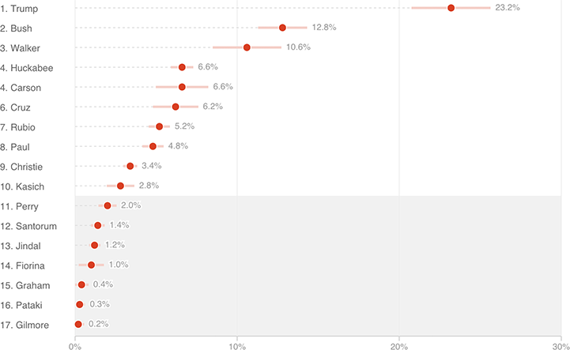

Who ‘Belongs’ In The Fox News GOP Debate?
Averaging five polls together shrinks the margin of error, but not enough to meaningfully separate 10th from 11th place.

Notes
— Lighter bars indicate margin of error.